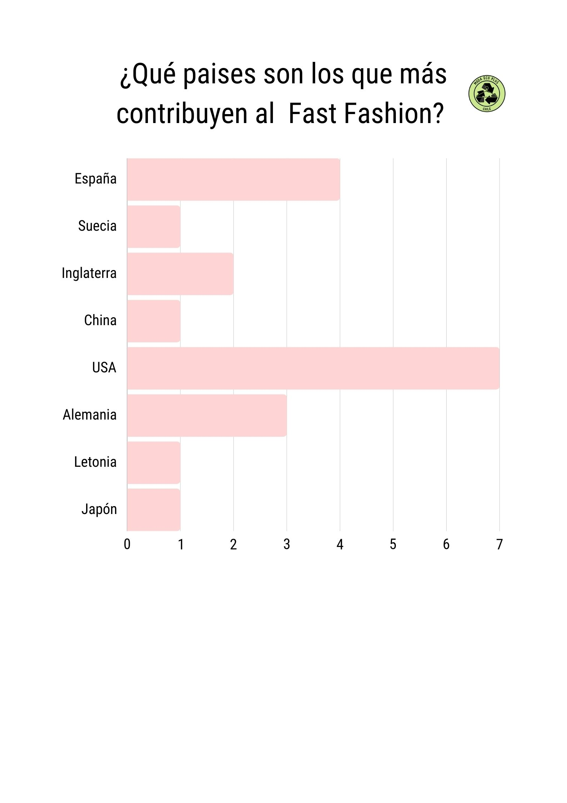

El siguiente gráfico permite darnos claridad sobre cuáles son los paises que más aportan a la contaminación ambiental por medio de la industria textil. Y es que, aunque realicemos acciones en nuestro día a día para ser mas sustentables, debemos cuestionarnos y reflexionar sobre el origen de la contaminación.
Los datos señalados fueron procesados mediante una base de datos propia, la cual analiza las 20 marcas de Fast Fashion más consumidas a nivel mundial.